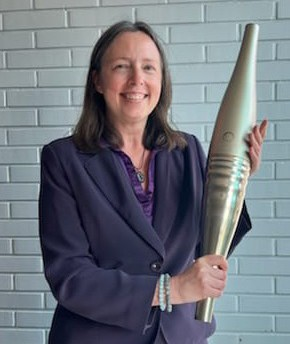

Rendre les parcours visibles. Donner envie d’avancer.
Diagnostiquer les freins à la mobilité, concevoir un espace commun et mobiliser les acteurs qui rendent les parcours possibles.
24entretiens semi-directifs
7 000+collaborateurs dans le périmètre national
Un portaildéveloppé, avec un lancement programmé
DU DIAGNOSTIC À LA MISE EN MOUVEMENT
Ce que j’apporte
Quatre compétences, illustrées par les actions conduites et les préconisations formulées durant ma mission.
01 · COMPRENDRE
Diagnostiquer
24 entretiens semi-directifs auprès de managers et d’acteurs RH, croisés avec des données quantitatives, pour comprendre les freins à la mobilité et recueillir une parole libre.
La démarche en détail
Un panel varié : RH et opérationnels, cadres et non-cadres, un salarié revenu après un passage à l’extérieur, un autre sur le départ faute de mobilité, et le regard d’un consultant externe.
Des entretiens d’au moins une heure, enregistrés sous garantie d’anonymat, avec un travail de mise en confiance.
Une triangulation avec les questionnaires de sortie, l’enquête cadres semestrielle, la planification stratégique des effectifs, le bilan social, les fiches emploi et l’accord sur les classifications et parcours.
Des freins mis en évidence : manque de visibilité, accès à la mobilité différent selon le statut, poids du réseau et lourdeur des procédures.
02 · CONSTRUIRE
Concevoir et déployer
Un portail unique à destination de tous les salariés, développé après benchmark et conçu du point de vue des utilisateurs, avec un plan de déploiement adapté au climat social.
La démarche en détail
Un constat de départ : l’information sur la mobilité était dispersée entre SIRH, intranets de sites, plateforme d’annonces et témoignages vidéo.
Ma réponse : un espace qui regroupe parcours, formation, communication RH, parcours inspirants et informations sur la mobilité.
Une conception outillée par un benchmark et l’examen de chaque fonctionnalité en situation d’utilisatrice, faute de pouvoir animer un atelier de design thinking.
Un déploiement préparé pour des sites de tailles différentes, aligné sur les rendez-vous RH : plan annuel de développement et learning week.
Des relais prévus : référent, animateurs, sensibilisation des RRH et des managers, module e-learning pour les nouveaux arrivants.
Préconisation acceptée, portail développé par mes soins et lancement programmé.
03 · SUIVRE ET AJUSTER
Piloter et écouter
Des indicateurs proposés pour suivre les entretiens professionnels et les demandes de mobilité, et une écoute collaborateur pensée pour anticiper les attentes.
La démarche en détail
Un tableau de bord imaginé autour des entretiens professionnels, des demandes de mobilité, des emplois visés, des échéances et des validations ou refus avec leurs motifs.
Un rapprochement proposé avec la planification des effectifs, la formation et les plans de succession.
Une écoute à intensifier : compléter les questionnaires de départ par des enquêtes plus fréquentes, en amont.
Une action menée : j’ai relu l’enquête collaborateurs à venir et fait ajouter des questions sur les parcours et la mobilité.
Le design thinking comme approche à mobiliser pour concevoir des outils répondant aux besoins réels.
Un lien avec l’excellence opérationnelle : l’absence de perspectives de mobilité peut nourrir le désengagement et fragiliser les équipes.
04 · MOBILISER
Conduire le changement
Une stratégie pour embarquer les managers et les RH de proximité, en s’appuyant sur les alliés et sur une démarche participative.
La démarche en détail
La stratégie des alliés de Fauvet et la carte des attitudes : repérer les enthousiastes, mobiliser les hésitants et les passifs, plutôt que se focaliser sur les opposants.
S’appuyer sur ceux qui ont déjà connu une mobilité pour comprendre ce qui a aidé ou freiné leur parcours.
Positionner les RRH en coachs des managers, y compris lorsque ceux-ci craignent de perdre des ressources.
Clarifier la gouvernance transversale entre talents, gestion des emplois, formation, communication et planification des effectifs.
Partager une ambition RH qui donne du sens et fédère au-delà des particularités de chaque site.
UNE DÉMARCHE EN TROIS TEMPS
Partir de zéro. Ajuster. Convaincre.
Une mission démarrée sans cadre précis, un premier retour jugé trop conceptuel, puis un projet repensé, validé et présenté en instance de direction.
01
Partir de zéro
Sans orientation précise au départ, j’ai construit mon réseau interne et cadré le sujet dans une période chargée en échéances RH.
Initiative · Autonomie · Réseau interne
02
Ajuster
Après un premier retour de la direction — « trop conceptuel » — j’ai repris le travail pour proposer un espace collaboratif concret, ouvert à tous les salariés, en gardant l’ambition d’innover.
Écoute · Agilité · Sens du concret
03
Convaincre
J’ai présenté le projet devant le comité de management, les organisations syndicales et la direction RH. Il a été validé, puis engagé dans un plan de communication pour annoncer l’outil.
Le SharePoint Parcours Professionnels présenté dans Notre Steel, juillet 2025, p. 23.

Rose-Marie De Coster.
MES CONVICTIONS
Ma façon de penser les RH
Visibilité n’est pas engagement
Montrer des parcours est nécessaire, mais l’engagement repose aussi sur une mobilité réellement possible et sur l’implication de ceux qui la rendent possible.
J’ai exploré deux hypothèses : la mobilité comme facteur d’engagement et la réussite du dispositif comme dépendante des acteurs RH.
L’exécution fait la réussite
Un dispositif a besoin de relais, d’une gouvernance et d’une animation dans la durée. Le changement se joue notamment auprès des managers qui craignent de ne pas pouvoir remplacer les salariés mobiles.
Entretiens réellement réalisés, indicateurs exploités et outils simples à utiliser : le pilotage compte dès la conception.
L’équité compte
Les règles écrites ne disent pas tout : le réseau, la culture et le statut influencent l’accès à la mobilité. Une information qui circule surtout par le bouche-à-oreille avantage ceux qui ont déjà un réseau.
Mon objectif : des parcours lisibles et accessibles à tous, quel que soit le poste ou le site.
La mobilité, un enjeu stratégique
Transformation des métiers, pénurie de compétences, attractivité : la mobilité interne répond aux besoins de l’organisation et aux aspirations de chacun.
De la GPEC à la GEPP, une conviction guide ma réflexion : le salarié choisit de s’engager ; le dispositif doit lui en donner des raisons concrètes.
Fondements théoriques
Une démarche nourrie par la recherche sur l’engagement, la motivation et les parcours professionnels.
Kahn · Engagement
Allen et Meyer · Engagement organisationnel
Herzberg · Motivation
Ulrich · Rôles de la fonction RH
Peretti · Gestion des RH
Fauvet · Stratégie des alliés
GEPP · Gestion des emplois et des parcours professionnels